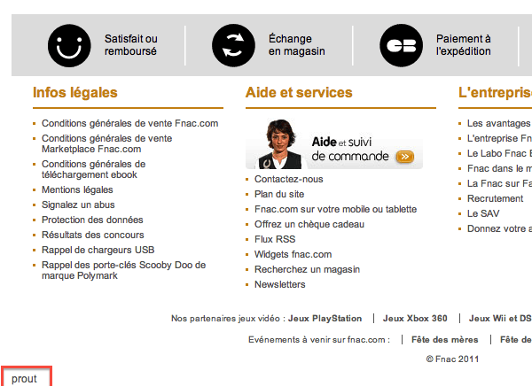

Coucou !
Benjamin Clay
Expert Web et Symfony & éleveur de licorne
 @ternel
@ternel
Joel Wurtz
Expert Web & tueur de licorne
@joelwurtz

Chez moi ça marche !
AFUP - PHP Tour Nantes - Edition 2012
Cette conférence n'est pas une conférence sur le cyclimse.
#Fail
Sources
Sources
Comment est-ce que tu gères tes sources ?
- FTP
- Emails
- SCP

Sources : Outils
Bien :
Sources : Outils
Mieux :
Sources : Outils
Code review :

Branche !
One branch to rule them all!
Branche !
One branch to rule them all!
- Petits projets
- Simple, rapide
- Quickfix impossible
- Aucune séparation des devs
Branches !
Une branche de dev / Une branche de release

Branches !
Une branche de dev / Une branche de release
- Moyens projets
- Simple, moins rapide
- Quickfix
- Aucune séparation des devs
Branchesssssss !
n-branches
Branchesssssss !
n-branches
- Gros projets
- Quickfix
- Séparation des devs
- Demande une trés bonne organisation
Branchesssssss !
n-branches
Recap.
- Utiliser Git (ou autre)
- Utiliser GitHub / GitLab (ou autre)
- Choisir l'utilisation des branches selon votre projet
Environnements
Environnements
Quels sont tes environnements ?
Environnements
Son dev distant :
Environnements
Environnements
Sa recette :
Environnements

Environnements
Sa preprod :

Environnements

Production
Un peu obligatoire, non ?
Pre-production
Staging, recette, whatever, ...
Intégration
Ça sert à quelque chose ?
Développement
Obligatoire... mais plein d'options possibles
Livraison
Livraison
Comment est-ce que tu livre ?
- A la main

Livraison
Cycle de livraison le plus court possible
- Meilleur contrôle
- Plus d'expérience
- Réduit les problèmes, le stress
Livraison
Documentation
- Simple à faire
- Pas normalisé
- Lourd à maintenir
- Rapidement obsolète
Livraison
Scripts shell
- Automatisation
- Assez simple
Livraison
Capistrano
- Ruby / Open-Source
- Nombreuses tâches disponibles et possibilité de surcharge
- Capifony : Surcharge pour les projets SF/SF2
- Murder : livraison par torrent
Livraison
Capistrano
Exemple de config -- @TODO
# Port
set :port, 9999
# App ?
set :application, "project_name"
# Where ?
set :deploy_to, "/var/www/#{application}"
# Which server ?
role :app, "localhost"
role :web, "localhost"
role :db, "localhost", :primary => true
# Who ?
set :user, "myUs3r"
set :password, "p4ssw0rd"
# More config
set :keep_releases, 3
ssh_options[:forward_agent] = true
# Path to php executable
set :php, "/usr/bin/php"
# Symfony application name (used for migrations)
set :sf_app, "front"
# Symfony web directory (www, web, public_html, ...)
set :sf_webdir, "www"
Livraison
Fabric
- Python / Open-Source
- Makefile amélioré, gestion ssh
- On doit écrire ses scripts
Livraison
Fabric
Exemple de config -- @TODO
def deploy():
with cd('%s' % env.srvdir):
run('git checkout %s' % env.git_branch)
run('git pull')
run('rm -rf app/cache/*')
run('%s composer.phar self-update' % env.php)
run('%s composer.phar install' % env.php)
run('%s app/console cache:clear --env=prod --no-debug' % env.php)
run('%s app/console assets:install --env=prod --no-debug web/' % env.php)
run('%s app/console assetic:dump --env=prod --no-debug' % env.php)
run('rm -rf app/cache/*')
Livraison
Livraison propre et similaire sur tous vos serveurs
MAIS
Problème de livraison == 90% du temps problème de config !
Livraison et configuration
Documentation
- Facile. Au début.
- Aucune normalisation
- Rarement maintenue
Livraison et configuration
Configuration management tools
- Déploiement des configurations sur différentes machines
Livraison et configuration
Puppet
- Ruby
Livraison et configuration
CF Engine
- C
Livraison et configuration
Chef
- Ruby
Chef
Exemple
Pink Sombrero ?
A mettre ou non ? à mettre au début ?
Merci !
JoliCode
Des questions ?
http://ternel.net/chezmoicamarche
- Benjamin Clay - @ternel
- Joel Wurtz - @joelwurtz
- JoliCode - @jolicode
Transition Styles
You can select from different transitions, like:
Cube -
Page -
Concave -
Zoom -
Linear -
None -
Default
Global State
Set data-state="something" on a slide and "something"
will be added as a class to the document element when the slide is open. This lets you
apply broader style changes, like switching the background.
"blackout"
"soothe"
Clever Quotes
These guys come in two forms, inline:
The nice thing about standards is that there are so many to choose from
and block:
For years there has been a theory that millions of monkeys typing at random on millions of typewriters would reproduce the entire works of Shakespeare. The Internet has proven this theory to be untrue.
Pretty Code
function linkify( selector ) {
if( supports3DTransforms ) {
var nodes = document.querySelectorAll( selector );
for( var i = 0, len = nodes.length; i < len; i++ ) {
var node = nodes[i];
if( !node.className ) ) {
node.className += ' roll';
}
};
}
}
Courtesy of highlight.js.
Fragment Styles
There's a few styles of fragments, like:
grow
shrink
roll-in
fade-out
highlight-red
highlight-green
highlight-blue